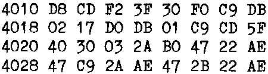

INMC 80 News |
September 1980 – January 1981 · Issue 2 |
| Page 26 of 59 |
|---|
Things to do, and what to do it to
(Op-codes and operands)
By now, anyone who actually bothered to read part one of this series will (of course) be fully proficient in the doubtful business of counting in HEX. Those who are still wondering about the necessity, need only look at the object listings of programs which sometimes find their way into this newsletter to realize that they are missing out on something by not understanding what it’s all about.
By the way, to digress (so soon already), object listings are the name given to those columns of HEX digits which appear when you use the Tab command on the Nascom. I don’t know why it’s called ‘object’, it doesn’t seem important to know, and I’ve never exposed my ignorance (till now) by asking anyone. The term ‘object listing’ refers to the machine code instructions (in this instance displayed in HEX) tabulated in some form that the programmer can read (it may also refer to a form that the computer can read). Essentially, it is the machine code instructions to the compute. It’s not confined to the Nascom form of display where each line starts with an address, followed by eight bytes displayed as two HEX digits each. For that matter, given that one byte (eight binary bits) only needs two Hex digits to express it, the space between each consecutive byte is not really required. Likewise, provided we know where the start address is, the address given at the start of each line can also be deleted. The result could be something like this:
4010 (start address)
etc.
instead of the more familiar

The first example is equally good ‘object code’, a lot more compact, but a darned sight less readable. It’s call ‘Intel format’ by the way, and is quite common in Stateside computer magazines. Thank goodness it’s not used much in this country.
So what do these numbers mean ? Well to understand that we must first look inside the Z80. Now for those who don’t know, the Z80 is what is known as the CPU which means Central Processing Unit, and at the bottom of it, it’s this chip which does the work. Despite the size and apparent complexity of the Z80, it really isn’t a frightening device. For a lot of purposes it can be treated as a ‘magic black box’, we don’t need to know how it did something, only the net result of what it did. With any CPU, real understanding comes through practice and not ‘book learning’.
The second thing to realise is that up till now we have generalised, and talked of HEX and object code. From now on we are going to be specific, and deal with the Z80. Z80 instructions mean something to a Z80, much as english means something to me. (Don’t believe you. Ed.) Portugese (any Portugese speaking persons amongst my readers will, I’m sure, forgive the reference) is totally foreign to me. The form of letters used is, in the main, the same, and a Portugese speaking person is a member of the human race (very much closer related to me in fact than the relationship between one CPU and another), but the language is different, and to me meaningless. In the game way, if Z80 HEX code were presented to, say, a 6502 CPU, the 6502 would be totally lost.
| Page 26 of 59 |
|---|